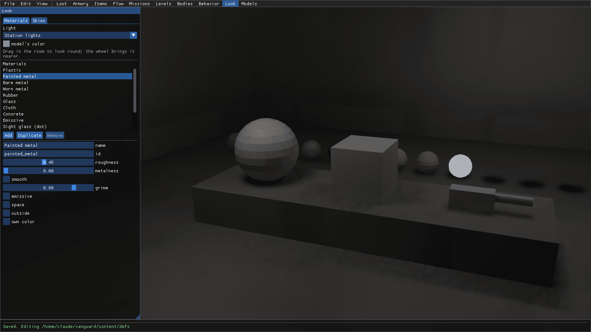
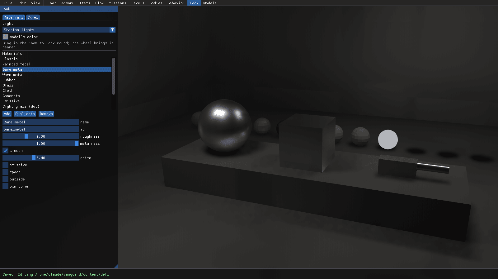
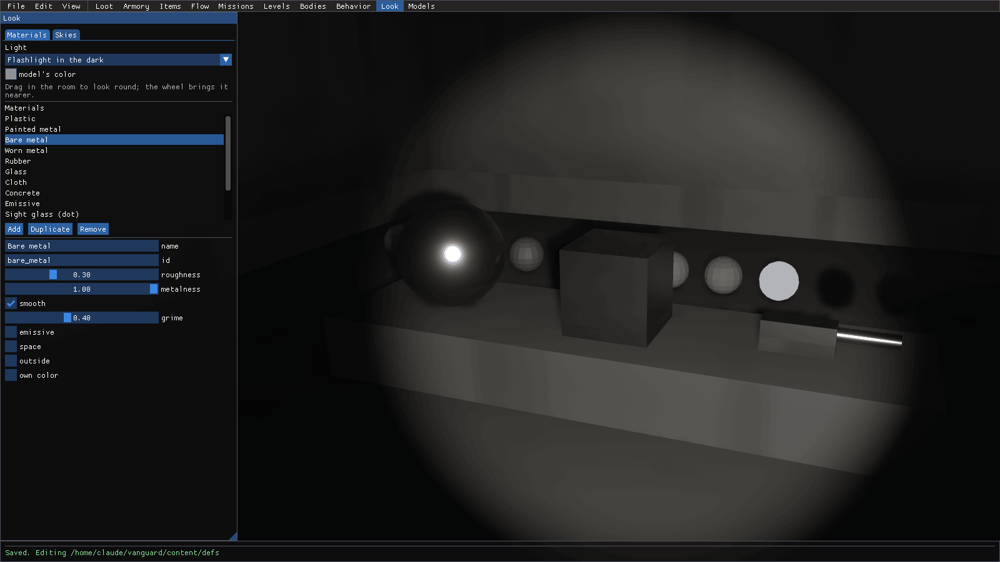
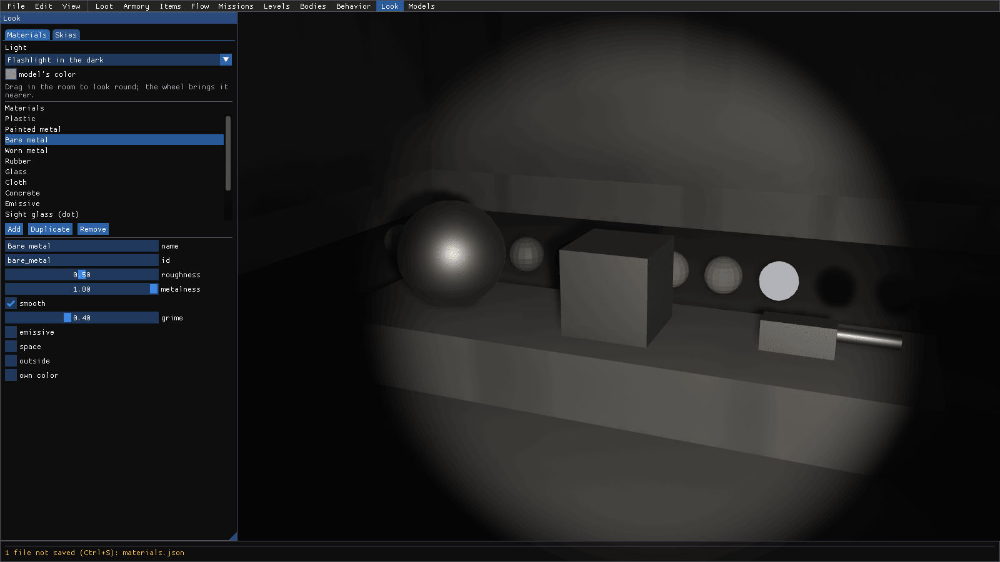
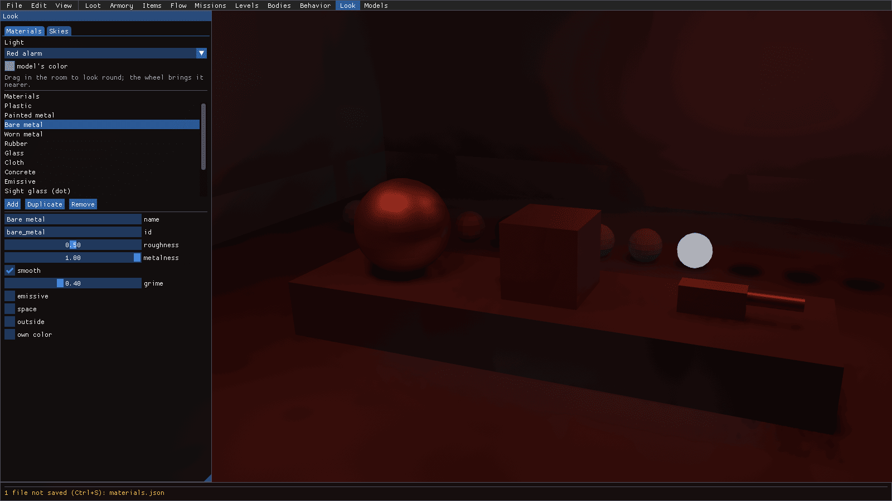
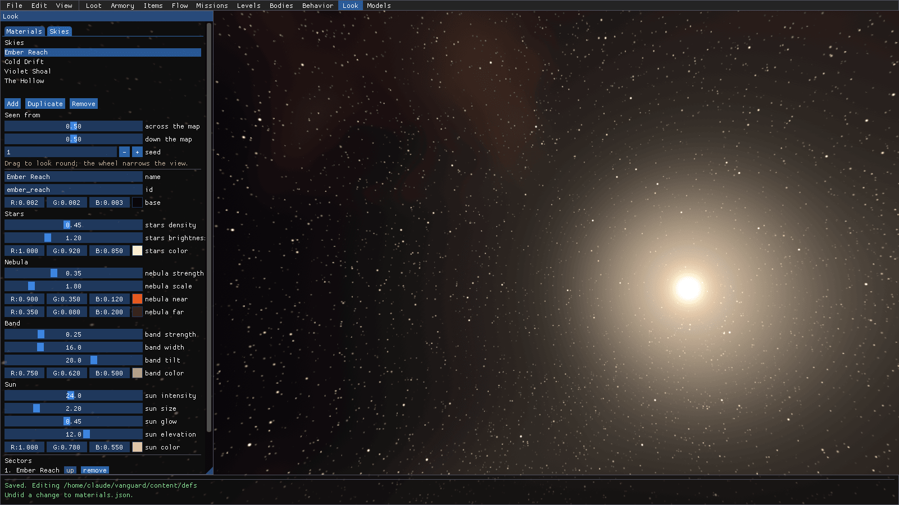
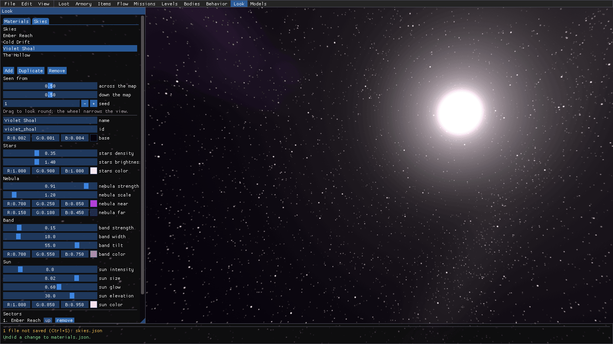
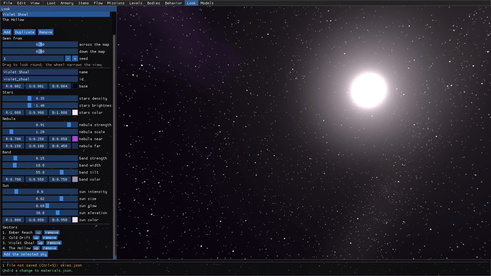

Studio: Look
Every model in the game is drawn with one of a small library of surface materials: painted metal, bare metal, glass,
rubber and the rest (content/defs/materials.json). Tweak one and every crate, gun and wall that uses it changes with
it. That's a lot of reach for a couple of numbers, so you want to see what you're doing!
Look mode puts the material on a few test shapes in a test room and lets you switch the room's lighting, so a
material that looks great under the station's lights doesn't turn into a mirror under a flashlight. It also has the
Skies tab, for the skies you see through a ship's windows (content/defs/skies.json). What each number in a
material means is in materials.md.
How to open it
Click Look on the mode bar at the top, or start Studio straight in it:
dotnet run --project src/LastFleet.Studio -- --mode look

Here's the tour:
- The panel on the left has two tabs, Materials and Skies. On Materials, the top has the Light the room's in and the shapes' model's color. Under them is the list of materials, with Add, Duplicate and Remove, and under that the picked material's fields.
- The test room on the right: a big sphere, a crate and a gun barrel in the picked material, and a row of every other material behind them to compare it with. Drag in the room to look around, and use the wheel to get closer.
Tune a material under each light
So the bare metal on the guns looks too shiny in the dark? Here's the flow:
- Click Bare metal in the list. The shapes switch over to it: roughness 0.30, metalness 1.00, smooth ticked and a little grime. Under the station's lights it reflects the room nicely.

- Open the Light box and pick Flashlight in the dark. The room goes black except for the beam, and there's that hot pinpoint on the sphere. That's what a player sees when he points a flashlight at a gun on the floor.

- Click the roughness slider at about its middle, to 0.50. The highlight spreads out and softens right away, on
the shapes and on every model Studio draws. The status bar now says
1 file not saved (Ctrl+S): materials.json.

- Now check it under the other lights before you call it done. Pick Red alarm in the Light box. Same material, same numbers, a very different room!

There's also Sodium hall and Outdoors in that box. Happy with it everywhere? Ctrl+S writes materials.json.
Not happy? Ctrl+Z puts the roughness back (the status bar says Undid a change to materials.json). One heads up:
under the flashlight, a mirror-smooth metal reflects a dark room, because the beam isn't part of the reflections.
Tune a sky
The Skies tab is what you see out of a window: stars, a nebula, the galaxy's band and the sector's sun, drawn by the game's own shader.
- Click the Skies tab. The list at the top has the skies (Ember Reach, Cold Drift, Violet Shoal, The Hollow), and the room is replaced by the sky itself. Drag to look around, and use the wheel to narrow the view.

- Pick Violet Shoal. Under Seen from are the preview's own settings: where across and down the sector's map you are (the sun moves with it), and the seed the clouds and stars come from. These aren't saved. Under them are the sky's own fields: its Stars, Nebula, Band and Sun, as sliders and color pickers.
- Click the sun size slider near its right end. The sun swells right there in the view (here to 8.02, which is
huge, but you can't miss it), and
skies.jsonis flagged as not saved.

- Scroll down the panel to Sectors. That's the order the fleet meets the skies in, one a sector, going round again past the last. up moves one up the order, remove takes it out, and Add the selected sky puts the picked sky on the end.

Ctrl+S writes skies.json, and Ctrl+Z backs out the change. Want a new sky? Duplicate one that's close, rename
it, and tweak away.
Where to next
- The reference is Look: the surface materials and Skies.
- What every material number does is in materials.md.
- To see which collider a model gets (and the models themselves on a turntable), see models.md.